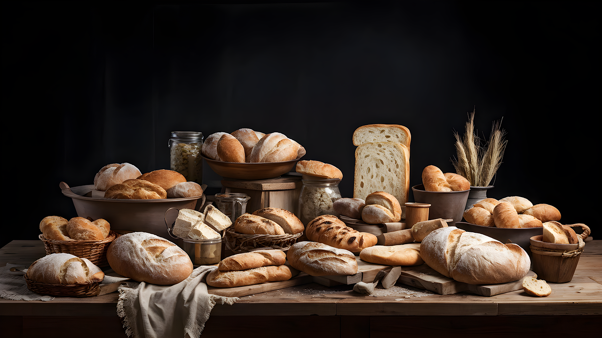
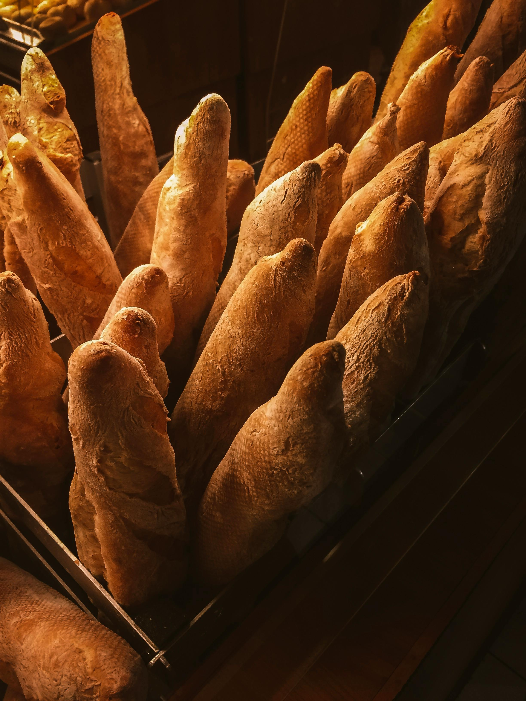
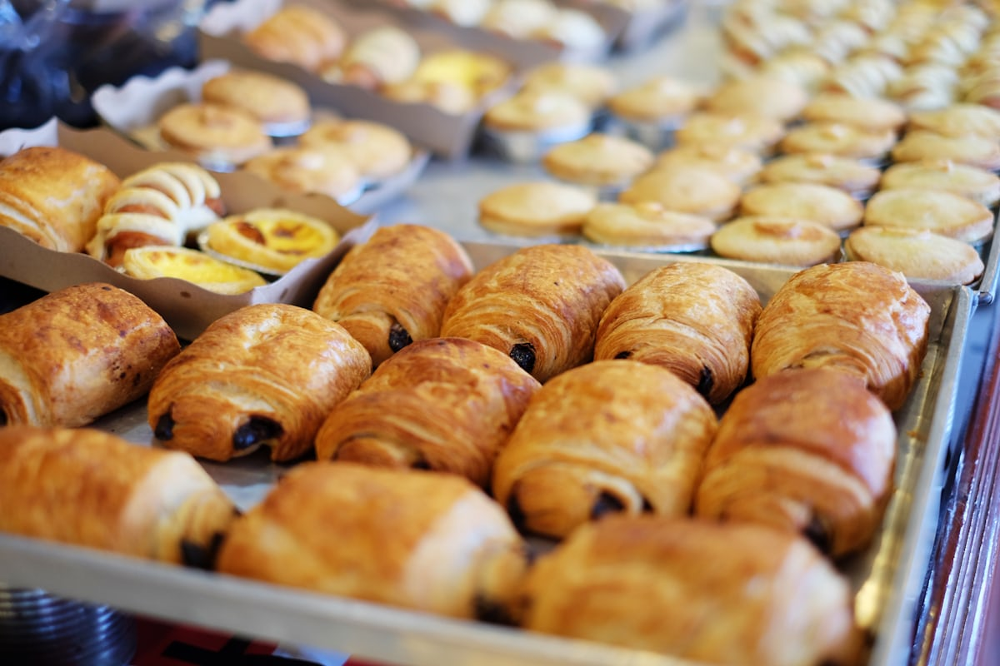
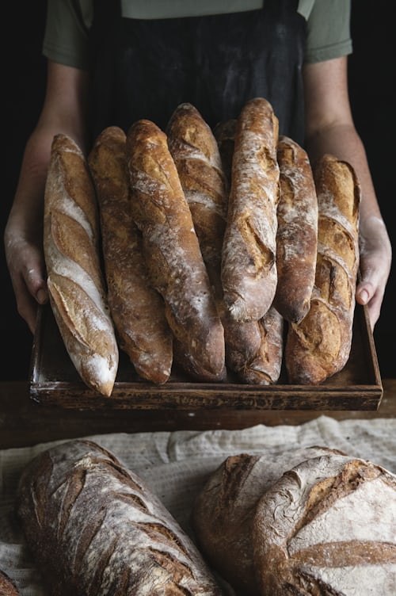
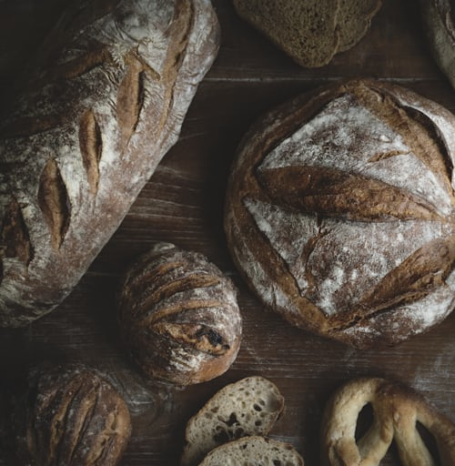

Freshly Baked Every Day
Moroccan and European pastries, breads and quick bites, baked in Casablanca. Start with our olive baguettes and traditional Moroccan biscuits.
Order now!
Our selection
Baguettes
Croissants Macarons
Macarons

Rye bread
Pain de seigleAbout Maison Serraj
Maison Serraj is a boulangerie-pâtisserie in Casablanca. We bake traditional Moroccan and European pastries, bread and quick bites every day. Customers recommend our Moroccan biscuits and pastries, and our olive baguettes.
Visit or call us
Address
Rue Socrate, Résidence Livin Socrate
Opposite the swimming pool
20390 Casablanca, Morocco
Questions
Where can I find you?
We are on Rue Socrate in Casablanca, in the Résidence Livin Socrate, opposite the swimming pool.
How do I order?
Call us on +212 522 94 55 55 to order or to ask what is fresh from the oven today.
What do you bake?
Breads such as baguettes, olive baguettes and rye, croissants, macarons, traditional Moroccan biscuits and pastries, and quick bites.